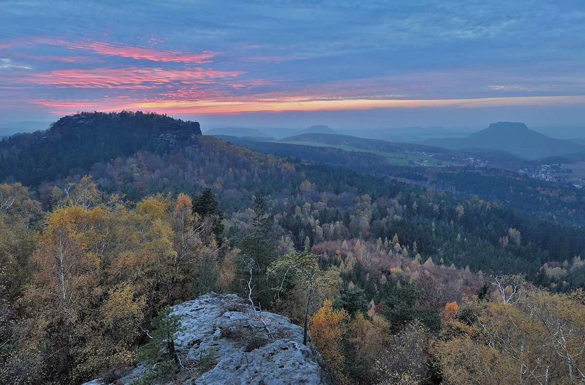

探索萨克森瑞士：德国自然奇观的完美指南

位于德国东部的萨克森瑞士（Sächsische Schweiz）是一片令人惊叹的自然风景区，以其独特的砂岩山脉和壮丽的峡谷著称。这里不仅是徒步爱好者的天堂，也是摄影师的梦想之地。本文将为您提供一份详细的旅行指南，助您充分享受萨克森瑞士的美景和文化。
如何到达萨克森瑞士
萨克森瑞士距离德国德累斯顿约40公里，交通便利。如果您从德累斯顿出发，可以选择乘坐火车或自驾车。火车路线直达风景区的核心地带，如巴特舍瑙（Bad Schandau），从那里您可以轻松开始您的探险之旅。自驾车则更为灵活，您可以沿途欣赏更多美景。
最佳旅行时间
萨克森瑞士四季皆有不同的魅力，但春季和秋季是最佳旅行时间。春季，山谷中鲜花盛开，气候宜人；秋季，红叶点缀山林，景色如画。夏季虽然游客较多，但也是欣赏绿意盎然的最佳时期。冬季则适合喜欢雪景的游客，不过部分徒步路线可能因积雪封闭。
必看景点
1. 巴斯泰桥（Basteibrücke）：这是萨克森瑞士的标志性景点之一，一座横跨峡谷的石桥，周围环绕着壮观的砂岩岩石。从这里俯瞰易北河，景色令人屏息。
2. 科尼希施泰因要塞（Festung Königstein）：这座历史悠久的要塞位于山顶，曾是军事要塞，如今对外开放，游客可以了解其丰富的历史，并欣赏全景。
3. 小瑞士（Kleine Sächsische Schweiz）：这片区域以其独特的岩石形态和幽静的徒步路线闻名，适合喜欢探索大自然隐秘角落的游客。
当地美食推荐
萨克森瑞士的美食融合了德国传统与地方特色，值得一试的有：
1. 萨克森芝士蛋糕（Sächsischer Käsekuchen）：这是当地的经典甜品，口感细腻，奶香浓郁。
2. 德式香肠（Bratwurst）：配以当地特产芥末酱，风味独特。
3. 易北河鱼（Elbefisch）：如果您喜欢海鲜，可以尝试新鲜的河鱼菜肴，通常以烟熏或煎炸方式呈现。
结语
萨克森瑞士是一个充满自然奇迹和历史底蕴的地方，无论您是徒步爱好者、历史迷还是美食家，这里都能满足您的需求。希望本文的指南能为您的萨克森瑞士之旅提供帮助，祝您旅途愉快！
Haiktec
Text mit KI erstellt und automatisch geprueft.